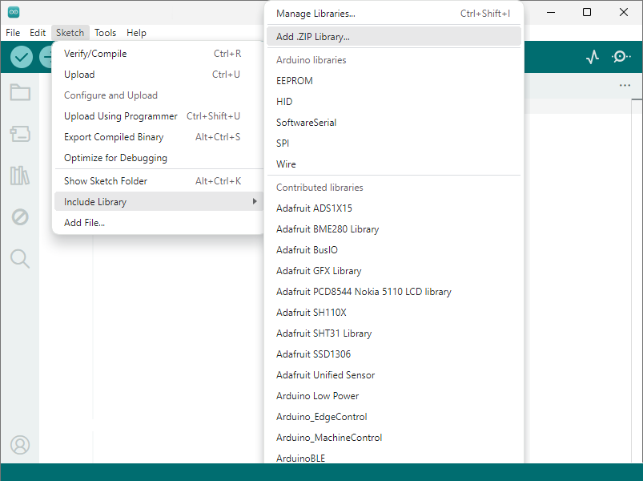

1 - Ejemplo Blink

Abrir el menú File-->Examples-->0.1 Basics y seleccionar el proyecto ejemplo Blink

Modificar el código. En este ejemplo el LED incorporado en la tarjeta cambiará de estado cada segundo (1000 ms).
Cargar el programa en la placa Arduino UNO (verificar que haya seleccionado el puerto correspondiente).
Esperar a que el programa indique que el sketch ha sido subido a la placa Arduino UNO.

2 - Visualización display

Abrir el menú de la izquierda LIBRARY MANAGER
Buscar e instalar la librería Adafruit SH1106

Aceptar INSTALL ALL la instalación de las librerías adicionales Adafruit BusIO y Adafruit GFX Library

Abrir el menú Archivo-->Ejemplos-->Adafruit SH1106-->OLED_QTPY_SH1106 y seleccionar el proyecto ejemplo SH1106_128x64_i2c_QTPY

3 - Entradas y salidas digitales

4 - Control motor DC

5 - Control relé electromecánico

Nota: Este circuito funciona con el código del proyecto 4
6 - Control relé de estado sólido

Nota: Este circuito funciona con el código del proyecto 4
7 - Control TRIAC

Nota: Este circuito funciona con el código del proyecto 4
8 - Control contactor

Nota: Este circuito funciona con el código del proyecto 4
9 - Entrada análoga

10 - Salida análoga (PWM)

11 - Comunicación One Wire: sensor DS18B20

Acceder a LIBRARY MANAGER, buscar e instalar la librería DallasTemperature

Aceptar INSTALL ALL la instalación de la librería adicional OneWire

12 - Comunicación One Wire: sensor DHT11

Acceder a LIBRARY MANAGER, buscar e instalar la librería DHT sensor library

Aceptar INSTALL ALL la instalación de la librería adicional Adafruit Unified Sensor

13 - Comunicación One Wire: sensor DHT21

14 - Comunicación One Wire: sensor DHT22

15 - Comunicación I2C: sensor SHT1x

Descargar la librería SHT1X
Instalar la librería SHT1X siguiendo el procedimiento mostrado en la imagen:

16 - Comunicación serial asíncrona (UART)
Cargar el programa en el dispositivo y abrir el menú Herramientas-->Monitor Serie para visualizar los datos enviados por el dispositivo.


Abrir el menú Herramientas-->Serial Plotter para visualizar gráficamente la señal análoga medida por el dispositivo.


17 - Comunicación serial asíncrona (UART)

Acceder a LIBRARY MANAGER, buscar e instalar la librería ArduinoJson

Descargar y ejecutar el programa COM_TEST para visualizar los datos enviados por el dispositivo.